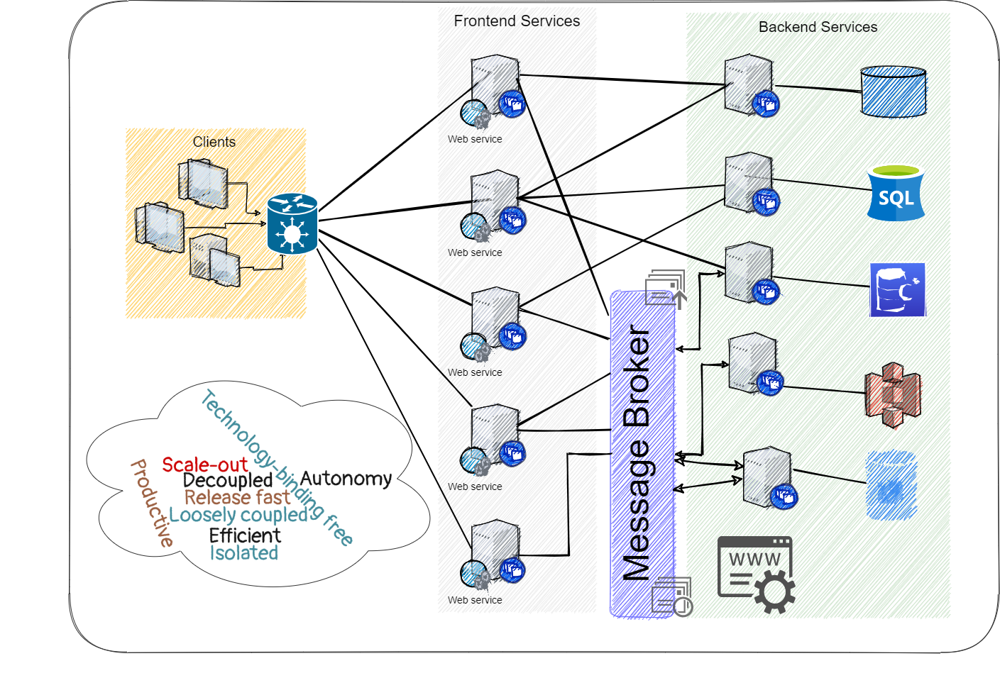
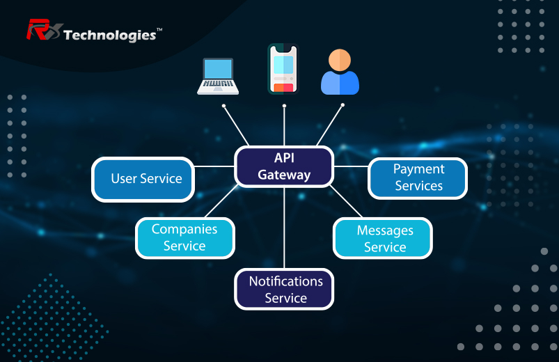

In software engineering, a microservice architecture is an architectural pattern that arranges an application as a collection of loosely coupled, fine-grained services, communicating through lightweight protocols. A microservice-based architecture enables teams to develop and deploy their services independently, reduce code interdependency and increase readability and modularity within a codebase. This is achieved by reducing several dependencies in the codebase, allowing developers to evolve their services with limited restrictions, and reducing additional complexity. Consequently, organizations can develop software with rapid growth and scalability, as well as implement off-the-shelf services more easily. These benefits come with the cost of needing to maintain a decoupled structure within the codebase, which means its initial implementation is more complex than that of a monolithic codebase. Interfaces need to be designed carefully and treated as APIs.
There is no single definition for microservices. A consensus has evolved over time in the industry. Some of the defining characteristics that are frequently cited include:
A microservice is not a layer within a monolithic application (for example, the web controller or the backend-for-frontend). Rather, it is a self-contained piece of business functionality with clear interfaces, and may, through its own internal components, implement a layered architecture. From a strategic perspective, microservice architecture essentially follows the Unix philosophy of "Do one thing and do it well". Martin Fowler describes a microservices-based architecture as having the following properties:
.jpg)
It is common for microservices architectures to be adopted for cloud-native applications, serverless computing, and applications using lightweight container deployment. According to Fowler, because of the large number (when compared to monolithic application implementations) of services, decentralized continuous delivery and DevOps with holistic service monitoring are necessary to effectively develop, maintain, and operate such applications. A consequence of (and rationale for) following this approach is that the individual microservices can be individually scaled. In the monolithic approach, an application supporting three functions would have to be scaled in its entirety even if only one of these functions had a resource constraint. With microservices, only the microservice supporting the function with resource constraints needs to be scaled out, thus providing resource and cost optimization benefits.
In 1999, software developer Peter Rodgers had been working on the Dexter research project at Hewlett Packard Labs, whose aim was to make code less brittle and to make large-scale, complex software systems robust to change. Ultimately this path of research led to the development of resource-oriented computing (ROC), a generalized computation abstraction in which REST is a special subset. In 2005, during a presentation at the Web Services Edge conference, Rodgers argued for "REST-services" and stated that "Software components are Micro-Web-Services... Micro-Services are composed using Unix-like pipelines (the Web meets Unix = true loose-coupling). Services can call services (+multiple language run-times). Complex service assemblies are abstracted behind simple URI interfaces. Any service, at any granularity, can be exposed." He described how a well-designed microservices platform "applies the underlying architectural principles of the Web and REST services together with Unix-like scheduling and pipelines to provide radical flexibility and improved simplicity in service-oriented architectures. Also in 2005, Alistair Cockburn wrote about hexagonal architecture which is a software design pattern that is used along with the microservices. This pattern makes the design of the microservice possible since it isolates in layers the business logic from the auxiliary services needed in order to deploy and run the microservice completely independent from others.

A key step in defining a microservice architecture is figuring out how big an individual microservice has to be. There is no consensus or litmus test for this, as the right answer depends on the business and organizational context. For instance, Amazon uses a service-oriented architecture where service often maps 1:1 with a team of 3 to 10 engineers.
To find the right level of service granularity, architects have to continuously iterate their component designs with programmers. Architects need to take into account user requirements, responsibilities, and architectural characteristics (aka non-functional requirements).
In the context of software architecture, services dedicated to a single task, such as calling a specific backend system or performing a particular calculation, are known as atomic services. Services that call atomic services to consolidate an output are referred to as composite services.
It is considered bad practice to make the service too small, as then the runtime overhead and the operational complexity can overwhelm the benefits of the approach. When services become too fine-grained, alternative approaches should be considered, such as packaging the function as a library or integrating it into other microservices.
If domain-driven design is being employed in modeling the domain for which the system is being built, then a microservice could be as small as an aggregate or as large as a bounded Context.
In the granularity of microservices discussion, there is a spectrum. On one end are the Anaemic Services, which do not have a large number of responsibilities, and on the other end are the Modular Monolith, which are large modules of a system.
The benefit of decomposing an application into different smaller services are numerous:
The microservices approach is subject to criticism for a number of issues:
The architecture introduces additional complexity and new problems to deal with, such as latency, message format design, backup/availability/consistency (BAC), load balancing and fault tolerance. All of these problems have to be addressed at scale. The complexity of a monolithic application does not disappear if it is re-implemented as a set of microservices. Some of the complexity gets translated into operational complexity. Other places where the complexity manifests itself are increased network traffic and resulting in slower performance. Also, an application made up of any number of microservices has a larger number of interface points to access its respective ecosystem, which increases the architectural complexity. Various organizing principles (such as hypermedia as the engine of application state (HATEOAS), interface and data model documentation captured via Swagger, etc.) have been applied to reduce the impact of such additional complexity.
According to O'Reilly, each microservice should have its own architectural characteristics (a.k.a non functional requirements), and architects should not define uniform characteristics for the entire distributed system.
Latency is often measured through "99th percentile" because median and average latencies can be misleading as they can miss outliers.
Computer microservices can be implemented in different programming languages and might use different infrastructures. Therefore, the most important technology choices are the way microservices communicate with each other (synchronous, asynchronous, UI integration) and the protocols used for the communication (RESTful HTTP, messaging, GraphQL ...). In a traditional system, most technology choices like the programming language impact the whole system. Therefore, the approach to choosing technologies is quite different.
